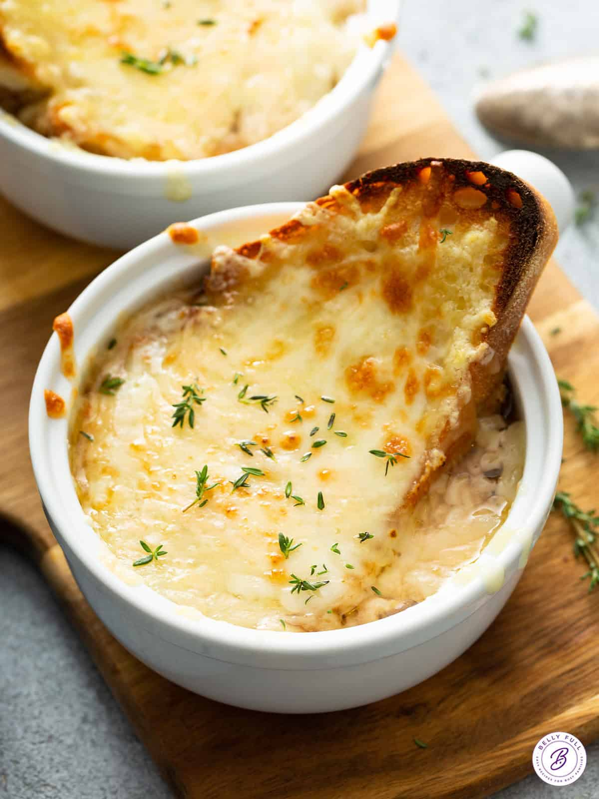

Ingredients
- Onions (thinly sliced)
- Beef Broth
- Butter
- Flour
- Dry White Wine
- Baguette Slices
- Gruyère Cheese
Instructions
1. In a large pot, melt butter and sauté the onions over low heat until caramelized (about 30 minutes).
2. Sprinkle flour over the onions and stir well. Add the white wine and cook for 2 minutes.
3. Pour in the beef broth and simmer for 20 minutes.
4. Toast the baguette slices and top with grated Gruyère cheese.
5. Ladle the soup into bowls, place the toasted baguette slices on top, and broil until the cheese is melted and bubbly.
6. Serve hot and enjoy!